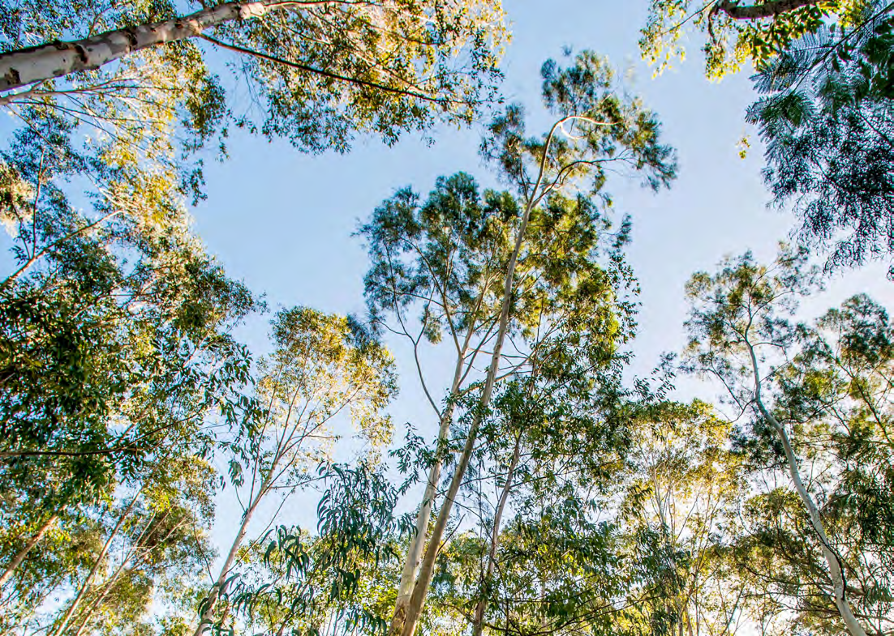
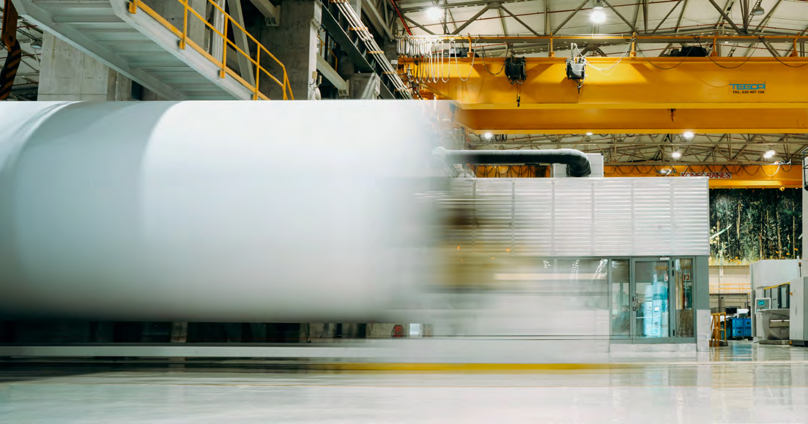
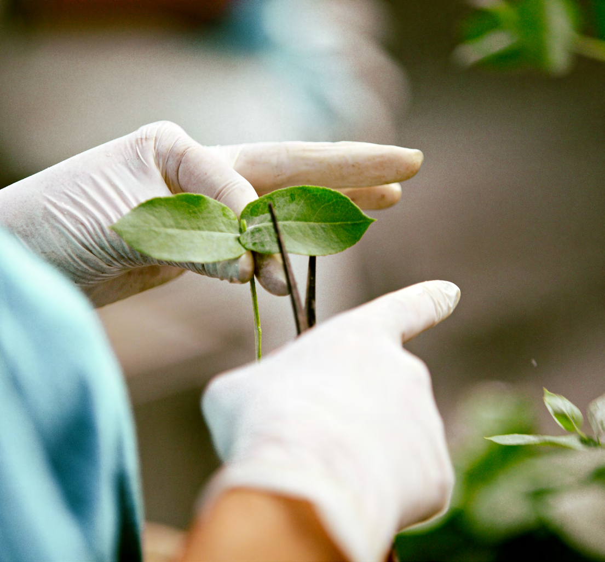
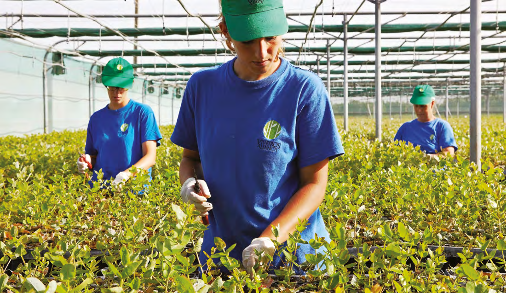
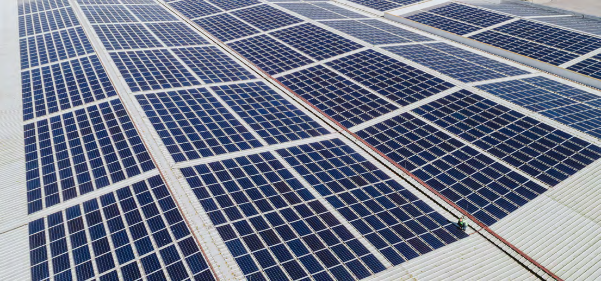
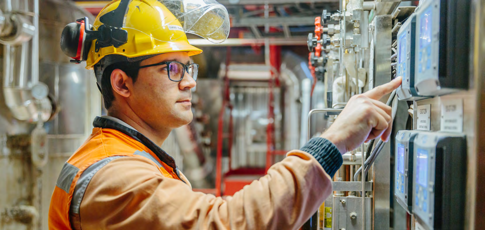
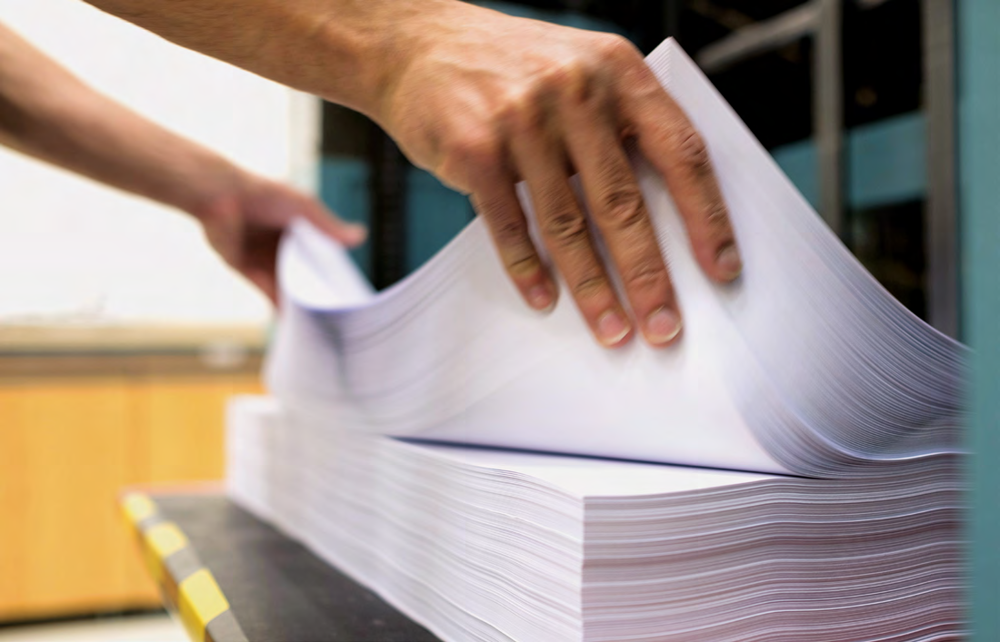
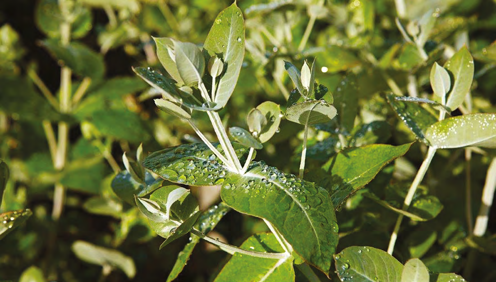

Sobre o Projeto

⚠️ Aviso Importante: Este é um projeto académico desenvolvido no
âmbito do 10º MBA Executivo do ISAG. O conteúdo apresentado não representa a estratégia real
da The Navigator Company e foi elaborado exclusivamente para fins didáticos e de
aprendizagem.
Módulo: Direção Estratégica de Pessoas | Docente: Professor
Protásio Leão
Contexto do Trabalho
Este microsite apresenta o Plano Estratégico 2026–2028 desenvolvido para a The Navigator Company, uma
das maiores produtoras europeias de papel UWF (Uncoated Woodfree), tissue e packaging sustentável.
O trabalho parte de uma análise profunda da posição competitiva da empresa e da conjuntura global em
2025, propondo uma direção estratégica assente na diferenciação focada na sustentabilidade e
inovação.
Adicionalmente, este projeto contempla o Plano Estratégico de RH 2026-2028,
alinhando a gestão de capital humano com os objetivos de crescimento e transformação da
bioindústria.
Equipa do Projeto
Professores Orientadores: Prof. Dr. Victor Tavares / Prof. Marco Dias
Estudantes: Bruno Silva | Joana Carvalho | Tiago Valinho | Cristina Vasconcelos |
Guilherme Marques
Estrutura do Site
- Sumário Executivo: Visão geral do plano estratégico
- Visão, Missão e Valores: Pilares da identidade corporativa
- Análises Estratégicas: PESTEL, 5 Forças de Porter, FCS, VRIO
- SWOT: Forças, Fraquezas, Oportunidades e Ameaças
- Objetivos & Indicadores: KPIs estratégicos para 2026-2028
- Plano de Ações: Iniciativas estratégicas prioritárias
- Estratégia de RH: Alinhamento do Capital Humano e HR Scorecard
- Balanced Scorecard: Painel detalhado com 4 perspectivas corporativas
Apresentação Completa
Faça o download da
apresentação completa do Plano Estratégico em formato PDF
Download PDF
Sumário Executivo

Duplo Desafio Estratégico
- Gerir o declínio estrutural do papel de impressão e escrita (UWF)
- Acelerar a transição para uma bioindústria diversificada (tissue e
packaging)
Direção Estratégica
Diferenciação focada na sustentabilidade e
inovação
Prioridades de Ação
- ✓ Expansão em packaging sustentável – Substituição de plásticos e fibra moldada
- ✓ Consolidação e crescimento orgânico em tissue – Mercados institucional e
consumo
- ✓ Otimização do negócio de papel UWF – Geração de fluxo de caixa e segmentos
premium
Objetivo Central
Transformar a reputação ESG num ativo comercial e competitivo global, monetizando a
liderança em sustentabilidade através de prémios de preço, fidelização de clientes e acesso a
mercados exigentes.
Fundamentos Sólidos
O plano 2026–2028 parte de uma análise profunda da posição competitiva e da conjuntura global em
2025. A empresa mantém:
- Integração vertical completa (floresta → cliente)
- Capacidade de inovação materializada no Instituto RAIZ
- Liderança mundial em ESG e sustentabilidade certificada
- Marca global "Navigator" com reconhecimento premium
- Base florestal de ~105.000 hectares de eucalipto globulus certificado
Visão, Missão e Valores

🔭 Visão
Liderar a transição para uma bioeconomia de consumo, tornando-nos a referência
global em soluções de base florestal que substituem produtos de origem fóssil nos mercados de
packaging e tissue.
🎯 Missão
Acelerar a nossa transformação numa bioindústria diversificada, desenvolvendo e
comercializando, de forma inovadora e rentável, soluções de packaging e tissue
que respondam à procura global por produtos sustentáveis e de alta performance.
💡 Valores
| Valor |
Descrição |
| 🌱 Sustentabilidade |
Pilar central da estratégia de negócio e fator de diferenciação global. |
| 🔬 Inovação |
ADN corporativo, materializado no RAIZ e no desenvolvimento contínuo de novos
produtos. |
| 🤝 Cooperação |
Trabalho em equipa e colaboração transversal como base da cultura interna. |
| 🚀 Proatividade e Ambição |
Desafiar o status quo e antecipar tendências de mercado. |
Breve Histórico
- 1953 – Fundação em Cacia, início da produção de pasta de eucalipto globulus
- 1957 – Pioneira mundial na pasta kraft branqueada com eucalipto
- 1974-2000 – Nacionalização e posterior reinvenção da empresa
- 2001 – Fusão Portucel + Soporcel
- 2015 – Entrada no mercado de tissue
- 2020s – Expansão em packaging sustentável e reforço do posicionamento ESG
Presença atual: +130 países | ~105.000 ha de floresta | Líder mundial em
sustentabilidade ESG
Análises Estratégicas

📊 Análise PESTEL
Avaliação do macroambiente externo que influencia a indústria de papel, pasta e packaging
sustentável:
| Dimensão |
Principais Fatores |
| Político |
Instabilidade geopolítica aumenta custos energéticos e logísticos. Políticas
europeias favoráveis à bioeconomia e transição verde. |
| Económico |
Abrandamento global e pressão inflacionista. Volatilidade dos preços da pasta.
Crescimento do e-commerce impulsiona procura por embalagens. |
| Sociocultural |
Consumidor mais consciente e exigente em sustentabilidade. Digitalização reduz
consumo de papel de escritório. Urbanização estimula procura por tissue. |
| Tecnológico |
Indústria 4.0, IA e IoT aumentam eficiência. Inovação em bioprodutos a partir da
celulose. IA generativa acelera design de packaging. |
| Ecológico |
Alterações climáticas ameaçam recursos florestais. Eficiência hídrica e energética
são fatores críticos. Certificações FSC/PEFC são vantagem competitiva. |
| Legal |
Regulação ambiental e sobre emissões (ETS) aumenta custos. Proibição de plásticos de
uso único cria oportunidades para packaging sustentável. |
⚡ 5 Forças de Porter
- Ameaça de Novos Entrantes: Baixa a
Média – Barreiras elevadas (CAPEX, acesso a matéria-prima, certificações).
- Poder dos Fornecedores: Médio – Navigator mitiga risco pela integração
vertical.
- Ameaça de Substitutos: Alta –
Digitalização substitui UWF; plástico ainda competitivo em custo.
- Poder dos Clientes: Elevado –
Distribuidores globais com grande poder negocial.
- Rivalidade entre Concorrentes: Alta –
Grandes players globais (UPM, Stora Enso, Mondi, Sappi, Suzano).
🎯 Fatores Críticos de Sucesso (FCS)
- Acesso a fibra sustentável e de baixo custo (certificação FSC/PEFC)
- Eficiência operacional e economias de escala
- Inovação dupla: bioprodutos + digitalização (IA, automação, dados)
- Logística global eficiente e proximidade a mercados-chave
- Marca forte e credenciais de sustentabilidade comprovadas
💎 Análise VRIO
Recursos que criam vantagens competitivas sustentáveis:
- ✅ Base florestal (E. globulus) – Valioso, Raro, Difícil de Imitar, Organizado
- ✅ Liderança ESG e reputação – Fonte de diferenciação global
- ✅ Marca "Navigator" – Reconhecimento premium em +130 países
- ✅ Instituto RAIZ (I&D) – Capacidade de inovação em biomateriais
Análise SWOT

|
ANÁLISE SWOT |
💪 Forças (Strengths)
- Líder mundial em sustentabilidade ESG
- Integração vertical completa (floresta → cliente)
- Inovação e I&D como fonte de diferenciação
- Marca global "Navigator" com preços premium
- Base industrial moderna e eficiente
- Histórico de forte geração de caixa
|
⚠️ Fraquezas (Weaknesses)
- Dependência elevada do UWF, em declínio
- Sensibilidade a custos de energia e químicos
- Concentração geográfica da produção em Portugal
- Gaps em competências digitais
- Posição ainda incipiente em tissue e packaging
|
🚀 Oportunidades (Opportunities)
- Crescimento do packaging sustentável (substituição do
plástico)
- Expansão do tissue em mercados emergentes
- Desenvolvimento da bioeconomia e novos biomateriais
- Monetização da marca ESG (prémio de preço)
- Digitalização e Indústria 4.0
|
⚡ Ameaças (Threats)
- Abrandamento económico global
- Declínio acelerado do papel UWF
- Rivalidade intensa de players globais
- Volatilidade dos preços da pasta
- Riscos climáticos e cibernéticos
- Regulação ambiental mais restritiva
|
Matriz TOWS – Orientações Estratégicas
📈 Curto Prazo (Oportunidades Imediatas)
- Alavancar liderança ESG e I&D para dominar packaging sustentável (fibra
moldada)
- Usar marca Navigator para justificar prémio de preço em segmentos premium
- Utilizar ativos eficientes para acelerar crescimento em Tissue
- Corrigir dependência do UWF através de investimento agressivo em Packaging e
Tissue
- Superar posição em construção via aquisições estratégicas (bolt-on)
🔬 Médio/Longo Prazo (Transformação Tecnológica)
- Focar I&D (RAIZ) no desenvolvimento da bioeconomia (biomateriais,
bioquímicos)
- Investir em Digitalização e Indústria 4.0 (biorrefinarias inteligentes)
- Mitigar gaps digitais com Academia Navigator (upskilling)
- Avaliar expansão produtiva fora de Portugal (proximidade a mercados)
Objetivos & Indicadores

8 objetivos estratégicos com KPIs mensuráveis para o horizonte 2026-2028:
| # |
Objetivo |
2024 |
Meta 2028 |
| 1 |
% Receitas Tissue + Packaging
Reequilibrar portfólio de
produtos |
26% |
45% |
| 2 |
Margem EBITDA UWF (%)
Manter segmento acima da média europeia
|
26% |
45% |
| 3 |
% CAPEX ESG
Investimento sustentável prioritário |
50% |
60% |
| 4 |
Nº de Novas Famílias de Bioprodutos
Inovação em biomateriais
|
0 |
3 |
| 5 |
% Colaboradores com Formação Digital
Capacitação da força de
trabalho |
20% |
70% |
| 6 |
Intensidade Energética (índice base=100)
Eficiência e
descarbonização |
100 |
70 |
| 7 |
Dívida Líquida / EBITDA (máximo)
Disciplina financeira |
1.85x |
2.00x |
| 8 |
Quota Tissue no Reino Unido e Espanha
Expansão em mercados
prioritários |
20% |
25% |
Destaques dos Objetivos
- 📊 Reequilíbrio do portfólio: Tissue + Packaging passarão de 26% para 45% das
receitas
- 💰 Rentabilidade do UWF: Manter margens premium (45% EBITDA) apesar do declínio
estrutural
- 🌱 Investimento ESG: 60% do CAPEX total dedicado a sustentabilidade
- 🔬 Inovação: Lançamento de 3 novas famílias de bioprodutos (biomateriais,
biocompósitos)
- 👨💼 Transformação digital: 70% dos colaboradores-chave com formação em
digitalização
- ⚡ Eficiência energética: Redução de 30% na intensidade energética
- 💵 Solidez financeira: Rácio de endividamento controlado (máx. 2.0x)
- 🌍 Internacionalização: Crescimento de 5 pontos percentuais em quotas de tissue
europeu
Plano de Ações

Iniciativas Estratégicas Prioritárias
🎯 1. Expansão Agressiva em Packaging Sustentável
- Aumentar capacidade produtiva em fibra moldada (molded fiber)
- Desenvolver embalagens funcionais para alimentar e farmacêutica
- Programas de co-inovação com clientes B2B
- Certificações adicionais para contacto alimentar
- Participação em feiras internacionais especializadas
🧻 2. Consolidação e Crescimento em Tissue
- Aquisições estratégicas (bolt-on) em mercados tissue de elevado potencial
- Expansão no canal Away-from-Home (AfH) institucional
- Força de vendas especializada em tissue profissional
- Integração completa da Accrol (Reino Unido)
- Novas certificações ambientais para tissue
📄 3. Otimização Seletiva do Negócio UWF
- Foco em segmentos de nicho e maior valor
- Programa de otimização de custos energéticos e logísticos
- Geração de fluxo de caixa para financiar novos negócios
- Gestão ativa da procura vs. capacidade produtiva
- Manutenção de prémios de preço via qualidade e sustentabilidade
🔬 4. Acelerar I&D e Bioeconomia
- Mais investimento no RAIZ (biomateriais, biocompósitos)
- Desenvolvimento de têxteis de base celulósica
- Exploração de bioquímicos e bioprodutos de alto valor
- Metodologias ágeis em desenvolvimento de produto
- Parcerias com universidades e startups de material science
- Registo de novas patentes (meta: >10/ano)
🤖 5. Transformação Digital e Indústria 4.0
- Implementação de IA e IoT para automação e otimização
- Gémeos digitais das fábricas para simulação e eficiência
- Novo CRM para packaging e tissue
- Plataformas de analytics para otimização da cadeia de valor
- Rotas logísticas otimizadas via IA
- Reforço da cibersegurança industrial (OT/IT)
👨🎓 6. Capacitação Digital e Gestão de Talento
- Criação da "Academia Navigator" (formação interna)
- Upskilling em bioeconomia, IA e digital
- Planos de sucessão e carreira estruturados
- Programa de intraempreendedorismo para colaboradores
- Atração de talento em ciência de dados e marketing digital
- Avaliação de desempenho focada em proatividade e inovação
🌍 7. Internacionalização Estratégica
- Avaliação de investimento direto em Espanha e Reino Unido
- Mitigação da concentração geográfica em Portugal
- Aproximação aos mercados consumidores europeus
- Expansão da base de clientes B2B em alimentar e farmacêutico (+20%)
- Reforço de parcerias logísticas para otimização de custos
Método de Desenvolvimento
O plano combina crescimento orgânico (interno) com aquisições
estratégicas (externo), permitindo:
- Acelerar a escala em tissue e packaging
- Ganhar quota de mercado rapidamente
- Aceder a canais de distribuição estabelecidos
- Adquirir know-how técnico e comercial
Créditos & Referências

📚 Sobre este Trabalho
Instituição: ISAG – European Business School / Instituto Superior de
Administração e Gestão
Programa: 10º MBA Executivo
Unidade Curricular: Estratégia Empresarial
Ano Letivo: 2025/2026
👥 Equipa do Projeto
Professores Orientadores:
- Prof. Dr. Victor Tavares
- Prof. Marco Dias
Estudantes (Grupo):
- Bruno Silva
- Joana Carvalho
- Tiago Valinho
- Cristina Vasconcelos
- Guilherme Marques
🏢 The Navigator Company
Toda a informação utilizada neste trabalho é de domínio público, obtida a partir de:
- Relatórios anuais e de sustentabilidade da empresa
- Website oficial: www.thenavigatorcompany.com
- Publicações académicas e de mercado
- Análises de concorrência e benchmarking setorial
🎨 Template & Design
Este microsite foi desenvolvido com base no template Dimension by HTML5 UP, distribuído sob licença Creative Commons.
Adaptações realizadas:
- Implementação da paleta de cores oficial da Navigator
- Estruturação de conteúdos académicos (PESTEL, SWOT, BSC, etc.)
- Criação da página dedicada ao Balanced Scorecard
- Otimização de acessibilidade (contrastes AA, alt em imagens)
- Integração de ícones e identidade visual Navigator
⚖️ Disclaimer Legal
PROJETO ACADÉMICO - MBA
EXECUTIVO ISAG
MÓDULO: Direção Estratégica de Pessoas
DOCENTE: Professor Protásio Leão
Este trabalho é de natureza exclusivamente académica. As análises, propostas e
recomendações estratégicas apresentadas não representam posições oficiais da The
Navigator Company e foram desenvolvidas unicamente para fins didáticos.
📧 Para questões sobre este projeto académico, contacte os autores via ISAG.